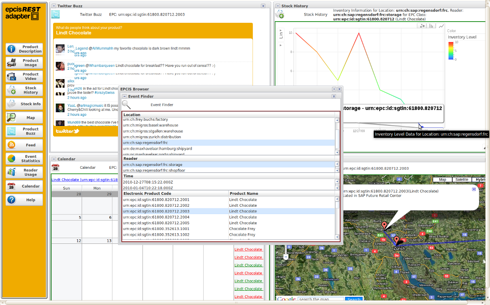

We provide a demonstration server for the EPCIS-Webadapter. This lets you browse and interact with the content of the Fosstrak EPCIS (or any compliant EPCIS) with any Web-browser, Web-language, or HTTP library.
An instance of the EPCIS-Webadapter interface can be found here:
http://restepc.webofthings.com
The EPCIS-Webadapter can also be used from a smart phone (experimental HTML rendering for Android and iPhone) using the same URL as above or by scanning the following barcode:

The EPC Mashup Dashboard is a Javascript client (running on Google App Engine) that demonstrates how the EPCIS-Webadapter helps building lightweight (e.g., mobile, mashup) applications on top of the EPCIS Respository featuring the Webadapter. You can access it here (best viewed with Firefox):
http://epcmashup.webofthings.com
Note, this later application is here for demonstration purposes only and should not be considered as "ready for production".

.
